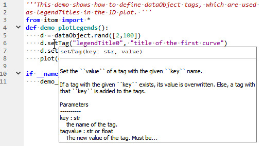
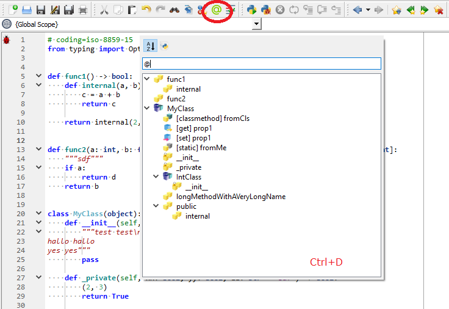
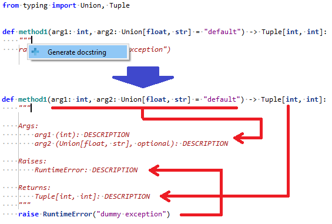

1. Changelog Version 4.1.0¶
1.1. itom¶
Version 4.1.0 (2021-02-xx)
(more than 410 commits in itom repository)
New or changed major features:
Complete rework of the themes darkStyle and darkOrangeStyle and their corresponding versions with rounded corners (darkStyleRounded and darkOrangeStyleRounded). Per default, the button set is now automatically chosen based on the gray-level of the background color of the selected style. There is a new demo script demo/ui/stylesheetEditor/stylesheetEditor.py, that can be used to implement your own style. The stylesheets are now adapted to work with all special widgets and plots of itom:

The Qt tool rcc.exe is now shipped with future setups to allow user-defined compilations of resource files, e.g. for custom style sheets with custom icons. Custom resource files can now be loaded at runtime via the the command
itom.registerResource()and unloaded viaitom.unregisterResource(). For more information, see the demo scripts in demo/ui/gui_icons_images.Pull request 59: A mouse-over tooltip with information about the word under the cursor in a script editor is shown. The content is rendered by the Python package Jedi
Pull request 62: Based on the current foldings of a script, a detailed outline structure is created in the background. The navigation combo boxes on top of the script are updated based on this outline and the method / class of the current cursor position is always pre-selected. Furthermore, a fast navigation with the current script or over all scripts is possible via a new outline popup. This popup is accessible by the an icon in the toolbar as well as by the Ctrl+D shortcut. Remove the @-sign in the search box to find methods and classes in all opened scripts:
Pull request 64: A new docstring generator was added to the script editor. It produces an pre-configured method or function docstring below the signature of a method. You can select in the property dialog of itom, if the docstring should follow the numpy or google docstring style. Insert the docstring either by the shortcut Ctrl+Alt+D or by the (context) menu of the script editor. Alternatively, start typing three apostrophes or double quotes right after the end of the signature. Then, a popup appears. Press enter to execute the docstring generation.
Ctrl+Tab in a script editor opens now the new tab switcher popup, where another script can be selected from a list. The most recently used tab is always on top of the list.

Pull request 61: An automatic Python code formatter has been added to the script editor. This is mainly a button in the toolbar or an action in the edit or context menu. If this button is pressed, a customizable Python module is called and the current script is passed to this module. The module then formats the code, e.g. following the rules of Python PEP8 and returns the formatted code. Using the undo button (Ctrl+Z), this operation can be undone. itom comes pre-configured to work with the module black. However, call commands for yapf and autopep8 can also be selected in the property dialog of itom. Furthermore, it is possible to define custom commands for other code formatter modules.
Pull request 45: Layouts of custom user interface can also be configured and its containing widgets can be added or removed via Python at runtime. To do this, layouts, derived from QLayout, can also be addressed via its
objectNameand are referenced as instances of the classuiItem. Many methods of these layouts can be called via the knownuiItem.call()method. Many public methods of these classes are also made accessible. For a complete list, see also Special (wrapped) slots. Examples can also be found in the demo scripts folder demo/ui/dynamicLayouts. The user documentation about custom user interfaces has been extended and improved (see Creating customized dialogs, windows and dock widgets).Pull request 51: Calls to the Python Jedi library for auto completion, calltips, help tooltips etc. are now handled by a background thread, that tries to get the Python interpreter lock (GIL). This allows getting help information via Jedi while another Python script is running. itom supports Jedi >= 0.16 and up to 0.18.
If a breakpoint is considered to be in an empty or comment line, an error text is printed at startup of a debug session and the breakpoint is deleted.
itom.dataObjectcan now be compared to other complex64 or complex128 dataObjects or scalar values.
{kind=link}
{kind=link}
{kind=link}
Further changes:
Complete check, correction and re-formatting of all docstrings in the
itommodule. All these docstrings following the rules of numpydoc.Pull request 55: Whenever itom is newly started or recompiled, a pyi stubs file is generated for all methods in the
itommodule. This allows showing the docstrings during auto completion, calltips and tooltips.Improved user management: A user can only create users with the same or less rights than himself, e.g. a developer cannot create an administrator, but another developer or user. The same holds for specific rights of the user and for deleting a user. The default user can now also have a password.
New methods in the class ItomUi of the module itomUi, usually used as base class for custom user interfaces in itom / Python. The new methods are factory functions for
withstatements:ItomUi.disableGui(), used to temporarily disable, hide, show or enable widgets during a long operation, andItomUi.blockSignals(), used to temporarily block all signals from one or multiple widgets. For more information, see also the demo script demo/ui/itomUiClassDemo.py.Pull request 43: Set the CMake variable ITOM_ADDITIONAL_EDITION_NAME to an arbitrary string, to define a certain edition of itom. This edition text is also shown in the splash screen, as well as in the about >> info dialog.
If comments are added via Ctrl+R in a script editor, a space is inserted after the # character. This considers the PEP8 style guide of Python.
New Python methods
uiItem.getClassName()to receive the Qt class name of the corresponding widget, anduiItem.getLayout()to get a reference to the layout, associated with the current container widget (if it is one).speed improvement when accessing
itom.uiItemobjects (attributes __slots__ and __dict__ are now filtered out before asking Qt for sub widgets)The ask before close dialog, displayed if itom should be closed, can now be disabled by a checkbox at the bottom of this dialog. This setting can always be reverted via the itom property dialog. This option is only displayed, if the current user has the necessary rights.
More public methods of QTableWidget wrapped to Python:
setCurrentCell,visualRow,visualColumn,sortItems.Issue 138: If a signal is connected to a Python callback method (e.g. via
dataIO.connect(),actuator.connect()oritomUi.connect(), a reference to unbound callback methods is kept. If the callback method is bound to a class, only a weak reference is kept to avoid cyclic garbage collections of the class instances.Pull request 56:
DataIOandactuatorplugins now have a user mutex, that can be accessed both by the C++ interface as well as by the Python methods py:meth:dataIO.userMutexTryLock, py:meth:dataIO.userMutexUnlock, py:meth:actuator.userMutexTryLock, py:meth:actuator.userMutexUnlock. Plugins must be compiled against the AddInInterface >= 4.2.0 to support this mutex.added new editorTheme
VSDarkStyle.inito styles/editorThemes which looks like Visual Studio.ParamEditorWidget can now display the slider widget as editor for floating point values using a popup slider. This feature can be enabled or disabled via the new property
popupSlider. TheAddInInterfaceversion was therefore altered to 4.1.0.Pull request 48: The attribute
metaDictis now also settable and can be set to a dictionary with several optional and mandatory meta values for this dataObject.Pull request 54: Implementation of the matmul (@) operator for the class
itom.dataObject. This is the preferred way for a matrix multiplication of two dataObjects. This is only available from Python 3.5 on. This fixes the issue #142.Improvements in fold detection, e.g. concerning multiline comments etc.
itom plugin C-API: Api Function apiFilterCallExt added to call functions with progress observer from other plugins.
If a Python method or function is run, the python state changed is published with a certain delay, such that very fast executions (< 100ms) will not propagate the begin/end state change to increase speed and avoid GUI flickering.
code editor feature: strip trailing whitespaces and tabs in the current line after pressed return or enter. This feature can be disabled in the properties (editor >> General). However, they are recommended to follow the Python PEP8 style guide advises.
The constructor of
itom.timerhas a new optional argumentstartAfterInit(default:True). If set, the timer is automatically started.py:class:
itom.timer, py:meth:itom.addMenuand py:meth:itom.addButtonaccept now lambda and partialfunc callback functions. Redesign of the timer manager dialog (class DialogTimerManager) to avoid race conditions if the timers are deleted or changed by Python while the dialog is opened. While the dialog is opened, all timers are continuously monitored to updated their activity state and timerID.connect/disconnect methods added to
itom.progressObserver, such that one can bind toprogressTextChanged,progressValueChanged,cancellationRequestedorresetDonesignals. Demo script added (demo/ui/observedParallelFunctions.py).info()added to show possible signals, one can connect to (usingconnect()).some signals added to class
FunctionCancellationAndObserver(cancellationRequestedandresetDone)Reduced default font size of plot labels from 12 to 10 and font from Helvetica to Verdana.
Script editor: insert codec feature improved, such that it can be reverted by the undo button.
The minimum requirements to compile and use itom are now: Qt >= 5.5, Python >= 3.5 and a C++ compiler, that supports the C++11 standard. Code switches for older versions of Qt and Python have been removed in the C++ code.
Bugfixes:
Pull request 42: Bugfix in option run selection of the script editor.
Pull request 46: fixes and enhancement of
pythonProgressObserver. The methodsprogressTextandresetare now also accessible via Python.Issue 126: improved python syntax highlighting: numbers with underscores are correctly parsed as well as the new @ operator for element-wise multiplication.
Issue 129: dataIO plugins, that don’t have a defined subtype (Grabber, RawIO, ADDA), will not be loaded any more and an error is added to the loaded plugins dialog.
Issue 130: The itom matplotlib backend is now compatible with Matplotlib <= 3.3.0.
Issue 133: Drag&drop of filter into console leads to wrong texts in German version.
Issue 135: correct typeset of example strings in helpTreeDockWidget.
Issue 139: itom is now compatible with PCL 1.10 and 1.11.
Issue 143: CRC errors in some PNG icon files.
Issue 154: The implicit conversion of a non-continuous dataObject to a numpy array is working again, without the need to convert the dataObject to a continuous one before. This conversion is done again in the background. This fix is necessary due to a minor implementation change from Numpy 1.18 on.
bugfix in mapping set of itom.dataObject for scalar assignment (bug occured in GCC 6)
Issue 157: clean GIT URL in version information (without username from https synchronization)
improvements in some widgets of itomWidgets library (statusLed and rangeSlider), especially to support better styling, e.g. with the dark theme of itom
bugfixes and improvements in color palette editor of property dialog of itom: the colors can now also be chosen via a color picker, the dark theme is improved and the position spin box has a better range handling.
itomSyntaxCheck.py: disable more logger warnings from flake8 (e.g. due to deprecated methods between mccabe and flake8)
bugfix when drawing a vertical line at a certain column position in the script editor.
bugfix in pip manager: if installing a package failed, it might be that temporary folders, starting with tilde, are still available in the site-packages directory. Ignore these directories during pip show …
If an actuator is closed (either by GUI or Python), its interrupt flag is raised. This would stop a possible movement as fast as possible (if implemented). The motor axis controller will not display any errors or warnings any more if an actuator is about to be deleted.
macro REMOVE_PLUGININSTANCE in addInInterface modified: if a plugin object should be deleted, it is now deleted by deleteLater() instead of a hard object deletion. This is necessary if for instance the dock widget of the plugin is still handling pending events. Else a crash is likely to occur.
MotorAxisController widget: added three properties to set the background color of input fields of axes, depending on their current state. This can be used to color axes, that are currently moved, that have been interrupted or run into a timeout. Adapted the dark styles to properly set these property depending on their color scheme.
itomWidgets: more widgets adapted to the current state of their mother project
ctk widgetsdefine the error code “E902” (TokenError: EOF in multi-line statement) as a real syntax error.
Maximum recursion limit of calls to Jedi (via itomJediLib.py) is set to 1100 to avoid uncatchable stack overflow exceptions.
Issue 147: Pip Manager calls pip via runPipUtf8.py module to force the stdcout and stderr stream to UTF-8 (under Windows). If this fails, pip is directly called in a process as fallback solution. The fix prevents Python to raise a
UnicodeEncodeErrorif any package contains special characters in its meta information.fixes a bug where the active line background in the console is enabled after an input command, even if the active line background is deactivated in the itom properties.
Bugfix with
save allfunction of scripts. If a modified script was saved, that was not the current script, the window title and internal current tab index was wrongly set afterwards.Python Package Manager works again for older Pip version < 0.18.
If an undo / redo operation is executed within a script, all current breakpoints and bookmarks are preserved. This is done by calculating a diff between the previous and new version of the text.
Further minor bugfixes
Others:
1.2. Plugins¶
Version 4.1.0 (2021-02-xx)
(141 commits in plugins repository)
AvantesAvaSpec: support for USB3 devices added (tested with AvaSpec-ULS2048CL-EVO). Documentation improved.
New plugin OphirPowermeter to support powermeters from the company Ophir. It is either possible to directly connect to powermeters via RS232 (using the serialIO plugin as communication layer) or via USB. For the latter, the Ophir COM object, e.g. delivered with the StarLab software, has to be installed on the target computer.
New plugin ThorlabsKCubeIM added to control Thorlabs K-Cube Controller for inertia stages and actuators.
New plugin ThorlabsFF to support filter flippers from Thorlabs.
The plugin PI_GCS2 now supports the C663 controllers from Physik Instrumente (PI).
Bugfix in plugin Ximea for external triggers.
The plugin PclTools can now be compiled with PCL 1.10 and 1.11.
SerialIO: The user can now define, if $(Ascii-Code) commands in the toolbox should be parsed or transmitted as it is.
The DummyGrabber plugin can now also show simulated Gaussian spot images.
Some debug output improvements in the plguin GenICam. FLIR cameras (e.g. AX5) are now supported.
Added the filter cvThreshold to the OpenCVFilters as wrapper for the OpenCV function cv::threshold.
CMake detection of GenICam 3.2 in the GenICam plugin.
bugfix in FittingFilters, filter fillInvalidAreas to properly detect NaN values.
further bugfixes and smaller improvements
1.3. Designer Plugins¶
Version 4.1.0 (2021-02-xx)
(more than 10 commits in designerPlugins repository)
itom1dqwtplot, itom2dqwtplot: Bugfixes, improvements and refactoring when creating shapes, especially polygons. This also holds for interactive shape selections, e.g. using the methods
plotItem.pickPoints()orplotItem.drawAndPickElements().itom1dqwtplot, itom2dqwtplot: When a camera is connected to the plot, a camera property toolbox is available and can be displayed via the toolbar of the plot. In this toolbox, all generic parameters of the connected camera can be changed. For number parameters with a defined minimum and maximum value, a popup slider is now displayed if the current parameter is clicked for a better usability.
vtk3dvisualizer: compatibility for PCL 1.10 and 1.11 added